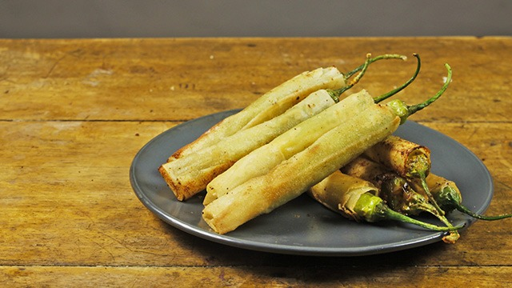

Dynamite sticks, or "dynamite lumpia," are a popular Filipino appetizer and street food consisting of long green chili peppers (siling haba or jalapeños) stuffed with cheese and seasoned ground meat (pork or beef). They are wrapped in a spring roll wrapper and deep-fried until golden and crunchy.